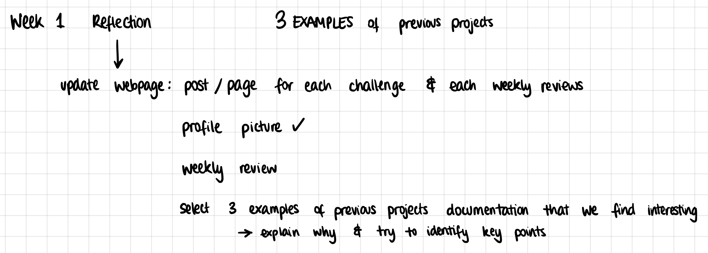

This week was a bit hard for me to follow, because I was one of the only people online and because I had a high fever from COVID. I struggled to hear what people were saying and got lost because I only received the correct zoom link 45minutes into the class. For this reason, I unfortunately don't have much to say about Wednesday's class, but I will make sure to catch up with my peers' notes.
This was the homework we were asked to submit:

This was the profile picture I decided to choose:
It was taken this summer when I was on holiday in a beautiful little island in Greece, called Milos. It was taken on 35mm film, and there was something wrong with this roll because each picture had a long blue line cut through the center of it. I was annoyed at it at first, but now I think it's actually kind of cool